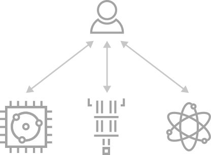

Embarrassingly Parallel
{kind=link}

Embarrasingly parallel scheme
As it was introduced, this scheme consists in the classical offloading of quantum tasks by mapping circuits to the available QPUs. For this, there is no need of inter-QPU communications of any type.
This distribution is convenient for exploiting resources and for accelerating execution times by reducing workload for each quantum node.
How to deploy
Within CUNQA, an insfrastructure of vQPUs which do not incorporate communications among them is launched as follows. Note that the number of vQPUs and their maximum deployment time are the only mandatory flags, for other additional options checkout qraise.
qraise -n 4 -t 01:00:00 <max time> [OTHER]
family = qraise(4, <max time>, [OTHER])
An useful feature is the --family flag (and family attribute in Python), since it allows us to tag the set of vQPUs. If
none is entered, family name will be the SLURM job id of the process in which the vQPUs live,
shown right after they are lauched in the terminal or returned as a str by the Python function.
It is also recomended to use the --co-located flag (and co_located attribute in Python), as
it allows to access the vQPUs from every node, not just the one the vQPUs are being set up. In this
documentation we are going to consider that this flag is set.
Circuits design
For instanciating CunqaCircuit class we must provide the number of qubits
and, if single-qubit measurements are intended to be done, number of classical bits
cunqacircuit = CunqaCirucit(num_qubits=2, num_clbits=2)
For quantum tasks ran in this scheme the limitation is that communications directives are not
allowed since their are not available for the vQPUs. Supported instructions, not only for this
scheme, are further explained at CunqaCircuit.
Execution
Once we obtain the QPU objects through get_QPUs
function run is employed for executing them into the vQPUs. By providing
the list of circuits and the list of QPU objects we allow their mapping.
qpus_list = get_QPUs(family=family, co_located=True)
qjobs = run(circuits_list, qpus_list, shots=1024)
The output is a list of QJob objects, each one associated to each quantum
task. One can also input a single circuit instead of a list and it will be mapped to all vQPUs
provided. Executions results can be obtained all together by the gather
function.
results = gather(qjobs)
This call for the results is a blocking call, since all simulations running in parallel need to be
done for the Result objects to be returned. To access information such as
time of simulation or output statistics there are class attributes, such as the shown below.
times_list = [result.time_taken for result in results]
counts_list = [result.counts for result in results]
Basic example
Next, we show an example that contains all the steps for an embarrasingly parallel distribution. Further examples and use cases are listed in Further examples.
import os, sys
# In order to import cunqa, we append to the search path the cunqa installation path.
# In CESGA, we install by default on the $HOME path as $HOME/bin is in the PATH variable
sys.path.append(os.getenv("HOME"))
from cunqa.qpu import get_QPUs, qraise, qdrop, run
from cunqa.circuit import CunqaCircuit
from cunqa.qjob import gather
# 1. QPU deployment
family_name = qraise(2, "01:00:00", family_name = "qpu_no_comms")
qpus = get_QPUs(family = family_name)
# 2. Circuit design
cunqacircuit = CunqaCircuit(num_qubits = 2, num_clbits = 2)
cunqacircuit.h(0)
cunqacircuit.cx(0,1)
cunqacircuit.measure_all()
# 3. Execution
qjobs = run(cunqacircuit, qpus, shots = 100)
results = gather(qjobs)
counts_list = [result.counts for result in results]
for counts, qpu in zip(counts_list, qpus):
print(f"Counts from vQPU {qpu.id}: {counts}")
# 4. Release classical resources
qdrop(family_name)